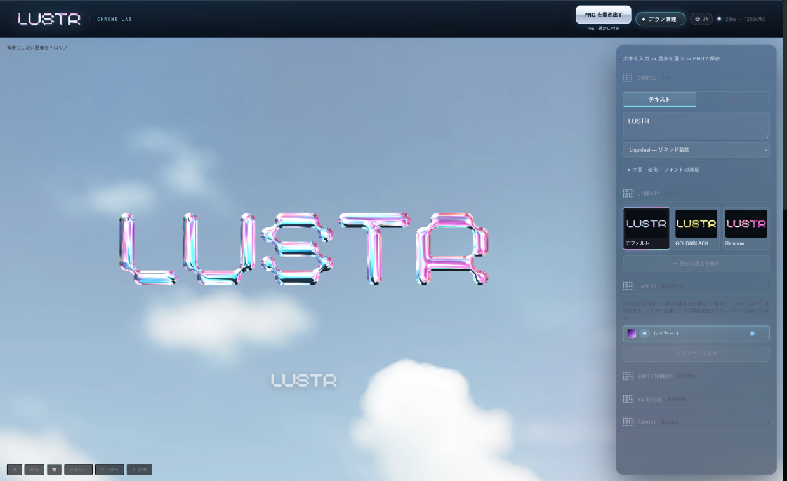
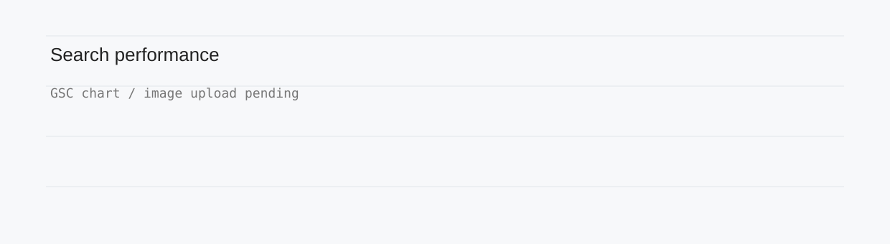

LUSTR
光沢のある金属文字を、ブラウザで作る。

01_context/
質感の加工から合成まで、
一つの画面で仕上げたい。
problem
Photoshopとプラグインを使う制作では、質感を加工した後にも色調整や合成が必要だった。ツールの導入と行き来の手間を減らし、ブラウザだけで仕上げられるようにした。
02_design-decisions/
質感を確かめながら、
文字を仕上げる。
fidelity
光沢と立体感を重ねて、金属らしく
文字表面のテクスチャに、縁の立体感、ハイライト、周囲の映り込みを組み合わせた。金属らしさを作る要素を重ね、ブラウザ上で調整できるようにした。
integration
質感の調整も、重ね合わせも同じ画面で
質感を作った後、そのままレイヤーを重ねて合成できる。別のソフトに移さず、調整から書き出しまで進められる構成にした。
before
Photoshop→Plug-in→Photoshop
文字・素材準備 → 質感加工 → 色調整・合成
after
LUSTR→Export
文字入力 → 質感調整 → 合成 → 書き出し
control
字間や厚みまで、自分で調整
フォントに加え、字間や文字の厚みも調整できる。プリセットを出発点に、用途に合わせて細部を仕上げられるようにした。
feedback
変更した結果を、その場で確認
設定を変えるとプレビューに反映される。書き出して確認する手間を挟まず、見た目を確かめながら調整を繰り返せる。
03_outcome/
公開後の実績
検索からのクリック数582source: GSC
アクティブユーザー数1,125source: GA4, period: 30 days
書き出し操作数1,432source: GA4, period: 30 days
search performance

Google Search Console: 検索流入の推移。画像は保存済みの実測グラフ。
用途に合わせた入口を作る
「パチンコ文字」を作りたい人のための専用ページを、2026年8月末〜9月初頭に公開。
制作したものを自分で届ける
noteに自分で記事を投稿し、検索以外からもLUSTRを知ってもらう接点を作った。
集計期間が異なるGSCとGA4のデータを併記しています。施策と検索流入増加の因果関係は未検証です。